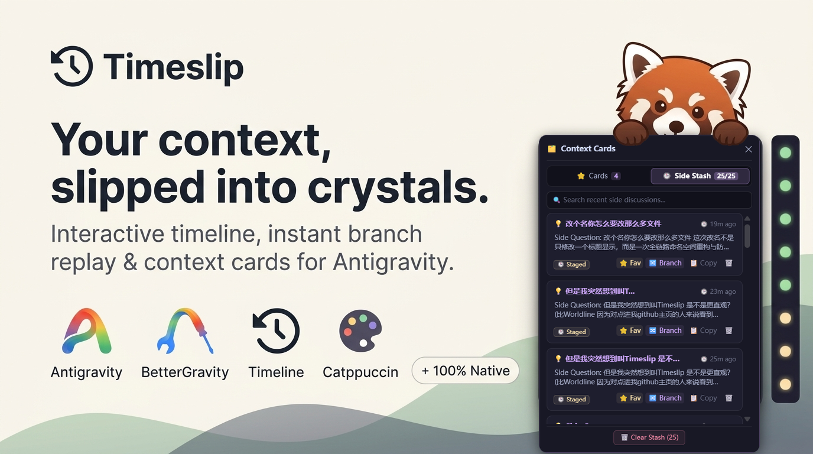

Interactive conversation timeline with persistent context cards. Zero reflow, zero clutter, built natively for Antigravity.

Vertical discrete navigation rail anchored to your chat edge. Bidirectional scroll-spy, context health tiers, and closed-loop virtual relay jumping.
Persistent context storage. One-pin capture, React Fiber hook injection, and pin & tag filters for rapid composer re-injection.
Selective turn-by-turn exporter. Filter queries, responses, thinking, or tools. Export publication-ready Markdown, JSON, or convert to context cards.
Zero titlebar clutter. A single 32px circular history clock harmonized with Catppuccin Turbo, providing one-click launch and instant interface toggles.
Long agent conversations quickly become difficult to navigate. Timeslip's timeline rail anchors directly to your chat edge, tracking turn pacing and context health tiers in real time.
● 18 turns · 0 comp · 4C) tracking turn depth, compaction boundaries, and chunk payload size.Don't lose critical context when branching or starting fresh sessions. Timeslip's Context Cards vault lets you pin essential insights and attach them directly to your composer with one click.
Export conversation trajectories without context bloat or manual selection friction. Filter user prompts, assistant responses, reasoning traces, and tool calls with surgical precision. Export clean Markdown, raw JSON, or promote selected turns directly into Context Cards.
Designed according to the Antigravity Workspace Constitution. Zero speculative dependencies, zero UI reflows, and pure standard library execution.
| Constitutional Standard | Implementation Rule | Timeslip Architecture Execution |
|---|---|---|
| Zero Reflow & GPU Defense | Never read innerText on chat trees; single-layer alpha blend only. |
Uses targeted textContent and pure alpha CSS; 0ms hover collisions. |
| Virtual Mount Convergence | No brittle static setTimeout on virtual jump navigation. |
Closed-loop state machine with RAF Intent Lock and DOM arrival verification. |
| Host State Reflection | No fragile /main.js regex patching or state corruption. |
Zero-patching React Fiber climbing via memoizedProps and host dependencies. |
| Modular Decoupling | Strictly prohibit monolithic files > 2,000 lines. | Decoupled into 11 specialized modules in src/, compiled via native bundler. |
| English-First Baseline | Zero hardcoded Chinese characters in codebase or manifests. | 100% clean English for frictionless global open-source distribution. |
Timeslip runs as a native plugin for BetterGravity on Antigravity 2.0.
git clone https://github.com/RedPanda-Craft/antigravity-timeslip.git
%APPDATA%\BetterGravity\plugins\antigravity-timeslip."antigravity-timeslip" to the "enabled" list in %APPDATA%\BetterGravity\settings.json.